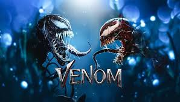
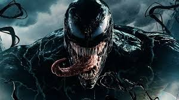
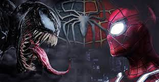

Sinopse:O jornalista Eddie Brock desenvolve força e poder sobre-humanos quando seu corpo se funde com o alienígena Venom. Dominado pela raiva, Venom tenta controlar as novas e perigosas habilidades de Eddie.

Rumores apontam Spider-Man 2 no PS5 com traje simbionte e lançamento em 2021 - Drops de Jogos
Venom apareceu pela primeira vez no arco Guerra Secreta, aonde Peter pensa ter achado um novo uniforme preto, mas era o simbionte, que ajudava a potencializar os poderes do Homem Aranha, mas ao mesmo tempo corroía a integridade do cabeça de teia que começou a agir feito um babaca.
Em paralelo a isso, vendo a história de Eddie Brock que era um jornalista com um futuro brilhante quVenom (Marvel Comics) – Wikipédia, a enciclopédia livree descobriu que Krooba estava fazendo teste ilegais em humanos na farmacêutica, mas por conta das ameaças que sua esposa, Anne Weying sofreu, ele abandonou a história, porém passou a sofrer de ansiedade e desde então ficou desesperado por conseguir qualquer história e por conta de uma matéria em que ele afirmava ter entrevistado o serial killer Comedor de Pecados, Emil Gregg e o jornal vendeu como água!
Mas para azar de Brock, no mesmo dia o Homem Aranha prender o verdadeiro Comedor de Pecador, a toda a carreira de Eddie foi destruída, ele foi demitido, sua esposa o deixou e ele passou a odiar o Homem Aranha, e começou a se dedicar inteiramente a ficar horas e horas malhando e nutrindo esse sentimento de se vingar.
Ele tenta cometer suicídio, mas por ser muito religioso, não consegue e vai até uma igreja pedir perdão, no exato mesmo lugar que Peter lutava para se liberar “do uniforme” preto. Sentido toda a raiva e ódio de Eddie pelo Homem Aranha e se agarrou a ele, dando a ele todos os poderes de Peter e ainda deixando ele imune ao sentido aranha.

Venom se sacrifica para salvar a vida no universo em nova HQ da Marvel Depois de muito infernizar a vida do Homem Aranha, temos um arco aonde ambos fazem um acordo de não irem atrás um do outro, e Eddie retorna para São Francisco, aonde ele passar ter uma relação mais “amigavél” com o simbionte e passa a salvar a vida de inocentes, mas ainda com bastante sangue e violência para os bandidos.

Se você já assistiu o terceiro filme do Homem Aranha do Tobey Maguire e o Venom de Tom Hardy, consegue que as duas histórias bebem bastante da fonte do material original.
Apesar de Homem Aranha 3 mudar alguns aspectos da vida particular de Eddie, temos que ter em mente que o filme era do Peter, e ele ainda tinha que dividir seu tempo de tela com outro vilão.
Já o filme Venom precisava se virar sozinho sem a presença do Homem Aranha, então todo o background com o cabeça de teia, mas tenho que ser sincera e falar que o fato dele já ser um anti-herói antes mesmo de encontrar o Peter me faz torcer o nariz – sim, ainda tenho esperança que Tom Hardy e Tom Holland possam se enfrentar nas telas, e como o acordo Sony/Marvel de que em 2022 os filme do Peter e do Venom irem para o Disney Plus me faz ter ainda mais esperanças ainda.
Conheça a história dos criadores
Veja a crítica desse filme Elencodesenvolvido por alison peres-ifms campus dourados